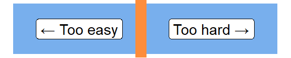
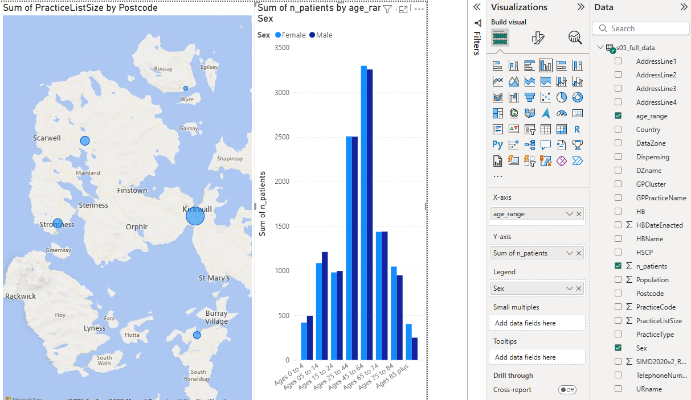
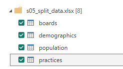
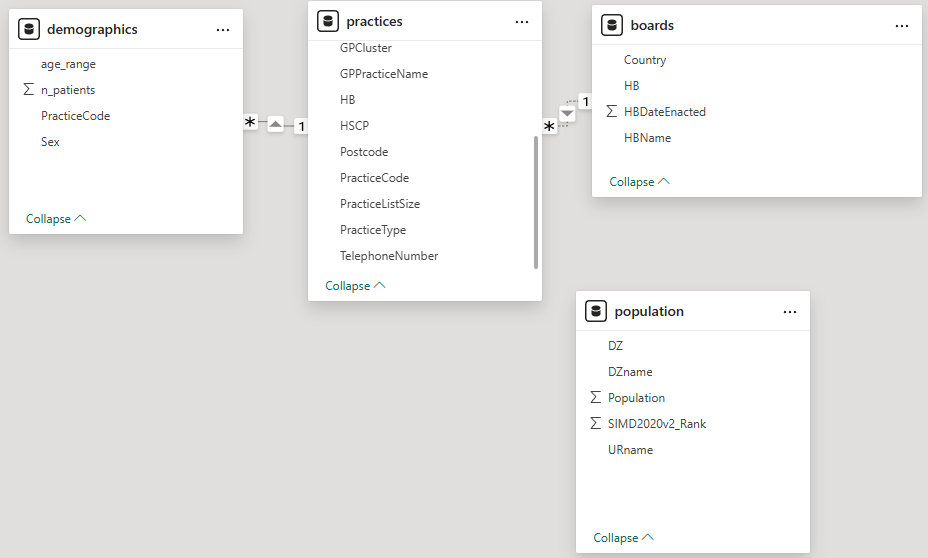
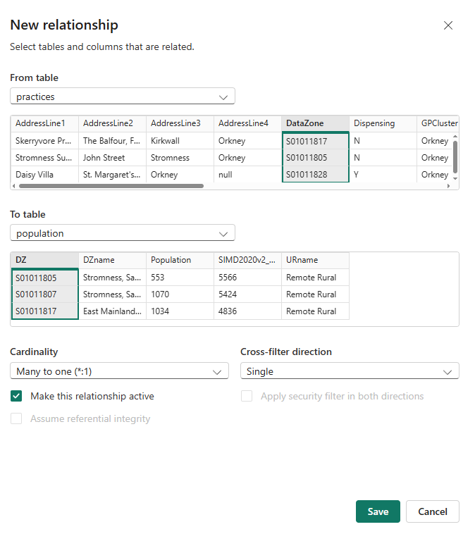

| name | height |
|---|---|
| Emma | 1.6 |
| Rani | 1.4 |
| Sven | 1.5 |
BI for beginners (session 5)
Power BI
beginner
Previous attendees have said…
- 60 previous attendees have left feedback
- 100% would recommend this session to a colleague
- 97% said that this session was pitched correctly

Three random comments from previous attendees
- very useful session - picked up a number of ideas
- Great sessions - Brendan is brilliant - a great teacher.
- Been interested in Power BI for a while and found this first session very intriguing. Keen to build on this over the next few weeks and find ways to utilise this in my workplace. I think the first session was a little slow with many people having problems with using the application (technology is not our friend). If you run this course again, it might an idea to add 15 minutes to the start to go through common issues or even have a pre-read document that discusses these with screenshots - who doesn’t love a good screenshot. Many thanks again to Brendan for another great training session!
Forthcoming session(s)
| Booking link | Date |
|---|---|
| BI for beginners (session 5) | 14:00-16:00 Tue 2nd December 2025 |
Session materials
There are two Excel datasets for this session
Session outline
- In this session, we’re going to think about data modelling for Power BI
- we’ll start with a sub-set of the GP data we were working with over the past couple of sessions
- as we’ll see, the simplest (and most Excel-like) way of holding that data isn’t a natural fit for work in Power BI
- we’ll use the model to explore that data
- we’ll introduce the idea of a star schema as the usual way that you’ll need to organise your data for Power BI
Setup
- download both datasets (.xlsx full data and .xlsx split data) to somewhere sensible on your computer
- connect to the full data Excel file, and load the single table
- recreate a simple starting dashboard as a warm-up exercise 
What’s the problem?
- this data is held as a single flat file
- while easy to understand, it’s highly repetitious: the seven GP practices in Orkney require 25 columns and 112 rows of data - so 2800 values in total
- this causes performance issues (as well as brain-ache)
What’s the solution?
- we can break this data into several related tables
- that reduces repetition and makes the data easier to understand
- this has the useful side-effect of speeding-up Power BI
Jumping ahead: a second bout of data loading
- create a new report
- connect to the .xlsx split data and load all four tables 
- have a look at the data - you’ll see that it’s much more concise (582 values in total - so approx a fifth of the size of the full data)
- now inspect your new data in the model
The model
- we should see our data tables as blocks in the model
- there are also connections between some of those blocks
Task
- Mouse-over the relationships in the model view
- What’s the difference between
 and ?
and ? - Now expand the Properties pane
Relational data
- instead of a single complex file, our data is now held as several related tables
- relationships - the lines between the blobs - show how the parts of our data are connected together
- for example, in the practices table, the HB column (which contains the health board code S08000025 each time) relates to the boards table HB column, which contains matching values
- that means that we can use the data from the boards table - like the name of the Health Board - in our Power BI work
Relationships
- you can see details of your relationships in the properties pane in the model view

Task
- make sure the practices-to-boards relationship is set to active - take care to click
Apply - re-create your original map using the postcodes from the practices table and the HBName column from the boards table

Creating a relationship
- if you look carefully at the model, you’ll see a missing relationship
- Power BI guesses which columns might share a relationship by looking for identical column names
- but the population table has a different column name from the practices table. Luckily, we can manually create a relationship:
Task
- drag the
DataZonecolumn from practices to theDZcolumn in the population table - that should open the
New relationshipdialogue:  - make sure the cardinality is set to
Many to one (*:1), and make the relationship active
Cardinality
- cardinality describes one feature of a data relationship: how many items should we expect at each end of the relationship?
- the simplest case is 1:1. We’d find that where each value is unique. So if we have two data sets like this, showing something like sports players, with their heights in one table and the number of goals they score in a second table:
and
| name | goals |
|---|---|
| Emma | 5 |
| Rani | 8 |
| Sven | 6 |
Think of the values in the name columns as keys that show us which rows of data correspond to each other. Using these names as keys, we’d expect a 1:1 relationship between the tables. Each key value is unique in each table, and so we’ll get exactly one value for Rani’s goals and height, for example. If we had several different rows for each player’s goals…
| name | goals |
|---|---|
| Emma | 5 |
| Rani | 8 |
| Sven | 6 |
| Emma | 4 |
| Rani | 7 |
| Sven | 6 |
This would give us a 1:many (which Power BI calls 1:*) relationship, where we’d expect to get several rows from the goals table for each row in the height table.
The star schema
If you look at our data, we’ve got a single central table (with the practice details), and then a group of three lookup tables that contain fine-print details about each one of the practices. That’s starting to approximate a star schema 
Starring your data
- we’ll leave this as a post-session exercise, but roughly, the steps are:

- take the full data query and duplicate five times (one per final table)
- rename each query (
main_table,demographics,boards,population,practice_details) - select the columns you need for each table:
- PracticeCode, DataZone, HB in the main table
- PracticeCode through to GPCluster in the practices_details table
- PracticeCode, age_range, n_patients, and Sex in the demographics table
- DataZone, Population, SIMD2020v2_Rank and URname in the population table
- HB, HBName, HBDateEnacted in the boards table
- remove duplicate rows in each table
- then check the relationships to make sure the keys and cardinalities match up!